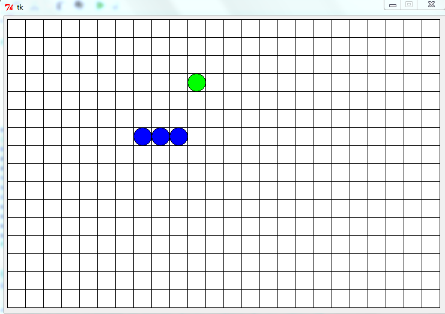
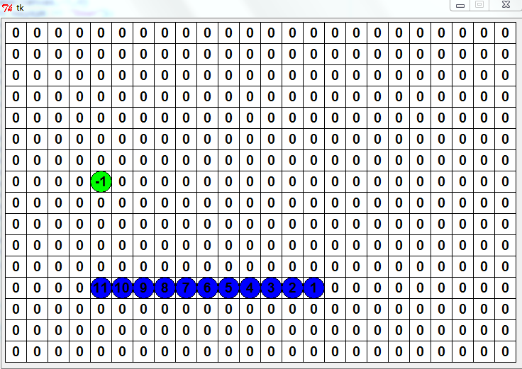

Rachel Yorke's Project: Snake
Description of Snake
This game uses the arrow keys to move, 'q' to quit, 'r' to restart and 'd' to debug or show the list board in action. The goal of this game is to collect the blue circles, food, and get the snake as long as you can without running tinto your own tail or running into the walls of the board.
My reflection
Overall, this project was very successful, it did what I wanted it to do, and it works fairly smooth. If I were to remake it, I would want to figure out a way that could make turns not affect the speed of the snake like it does in my game to avoid problems. Throughout the project I wasn't sure if I would be able to get it working, but after all my attempt, it worked as I wanted it to. When I first got the snake to move, it made me so happy! Throughout this project, I felt accomplished for being able to make this awesome game.
Click here for the repository.
Screenshot:
Screenshot:
